De Parel van Afrika · 6–26 juli 2026
Eenentwintig dagen door groene heuvels, kratermeren, oerwouden en savannes — met het gezin en deels met Roos, Yuri en Zaja.
De route in beeld
Een grote lus door het westen — in eigen tempo, met een terreinwagen.
Deze reis zoekt de balans tussen avontuur en rust. We beginnen bij Roos thuis in Kampala om bij te komen van de vlucht en in het ritme te komen. Daarna rijden we stap voor stap naar het westen, opbouwend naar de hoogtepunten: drie chimps- en gorilla-trekkings, drie safari's in de parken, en overal onderweg de mensen die deze reis bijzonder maken. De stukken met Roos, Yuri en Zaja zijn gemarkeerd in paars.
Hieronder volgt de hele route, etappe voor etappe. Foto's en verhalen worden na (of tijdens) de reis toegevoegd.
Bij Roos, Yuri & Zaja thuis · Kampala
● met Roos & YuriNa een nacht vliegen landen we midden in het bruisende, groene Kampala. Rommelig, levendig en meteen vol kleur. De eerste uren zijn voor bijkomen. De hitte, het lawaai, de energie die je tegemoet komt zodra je de aankomsthal uit stapt.
In april zagen we Roos nog in de Ardennen. Koude lucht, wandelen door beukenbossen, een klein huisje ergens aan de rand van het plateau. Nu staan we voor hun huis in Kampala, en de wereld kan niet verder van de Ardennen verwijderd zijn. Dit is waar Roos en Yuri voor hebben gekozen. Dit is hun leven.
Ze hebben hier een fijn thuis gevonden. Het huis is van de moeder van Yuri, maar voor Roos en Yuri voelt het als het hunne — en dat merk je. Drie hondjes die uitbundig blaffen bij de poort, het officiële welkomstcomité. Zaja trekt meteen aan Rosalie en Zeline om hun alles te laten zien. Haar huis, haar kamer, haar honden. Ze wil dat ze begrijpen hoe haar leven eruitziet.
Voor ons is er een eigen cabin naast het huis gereserveerd. Een eigen plek, vlak naast de drukte maar net even apart.
Vijf dagen de tijd om langzaam in het ritme te komen, samen te eten, bij te praten en de stad op eigen tempo te ontdekken. Kampala als eerste bladzijde van een reis die nog lang niet af is.
Dagboek
Jouw eerste indrukken van Kampala... De landing na een nacht vliegen, het huis van Roos en Yuri, de eerste avond samen. Hoe voelde het om eindelijk te zijn waar je zo lang naartoe hebt geleefd? Schrijf het hier op — voor jezelf, voor later.
Foto's
Ndali Lodge · boven de kratermeren
Ndali Lodge ligt prachtig op de rand van de kraterlandschappen ten zuiden van Fort Portal, met uitzicht over de helderblauwe meren die zich in de oude vulkaanmond hebben gevuld. Na de rit van vijf uur vanuit Kampala is de rust hier voelbaar.
Op 12 juli trekken Timothy en Rosalie samen het regenwoud van Kibale in op zoek naar chimpansees — de Ngogo-gemeenschap behoort tot de grootste en best bestudeerde ter wereld. Odette en Zeline genieten van de lodge en de omgeving.
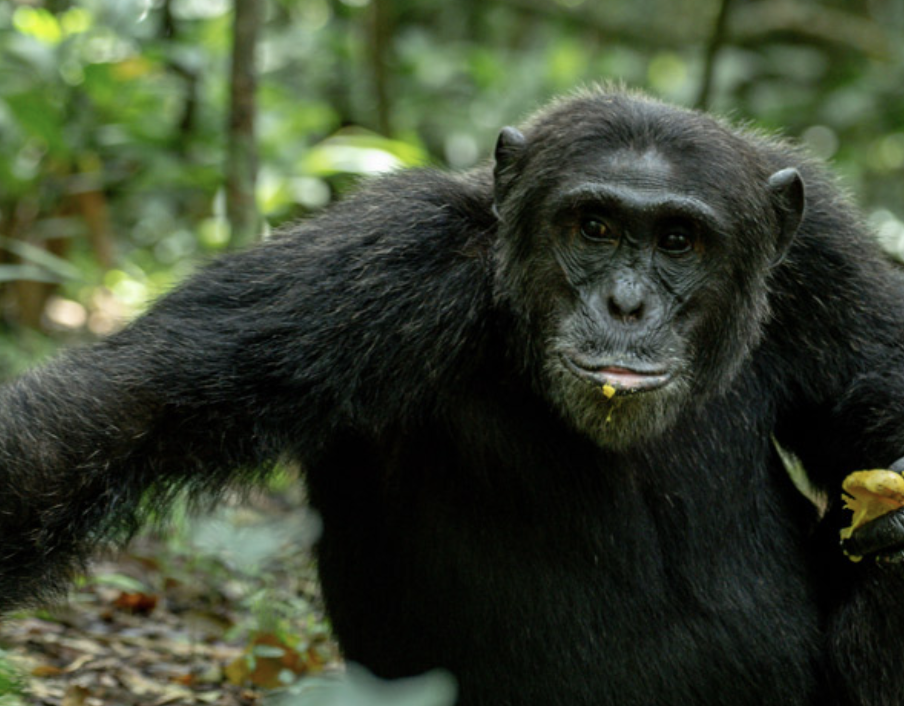
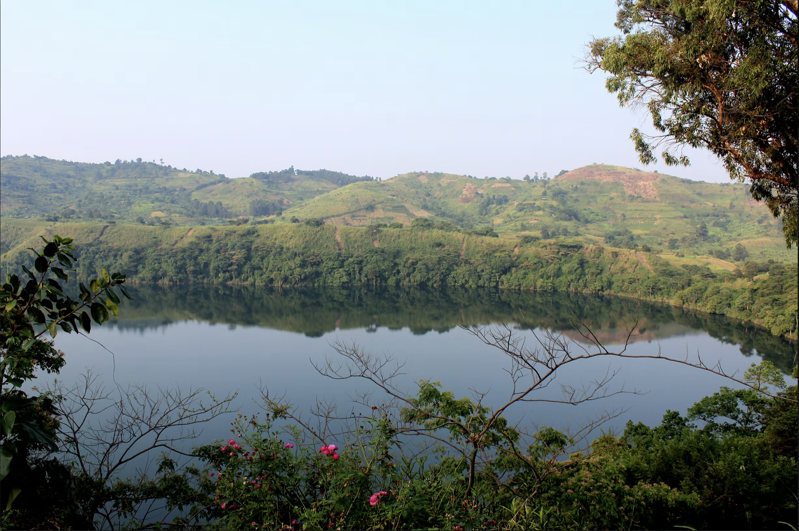
Dagboek
De rit van vijf uur naar het westen, de eerste blik op de kratermeren, Ndali Lodge... En de chimptrekking met Rosalie: hoe was het om samen het oerwoud in te trekken? Wat hoorden en zagen jullie? Schrijf het hier op voor het vergaat.
Foto's
Katara Lodge (noord, 3n) · Embogo Lodge Ishasha (1n)
● met Roos & YuriHet grote safarihart van de reis. Roos en Yuri rijden vanuit Kampala en sluiten hier aan. De eerste twee dagen zijn we in Katara Lodge — en dat is meteen een bijzonder detail: de lodge is van de nicht van Yuri. Uganda is klein als je de juiste mensen kent. We slapen op de rand van de Grote Riftvallei in een lodge van de familie van Yuri, met uitzicht dat je niet vergeet.
Wildlife op de vlaktes, een boottocht op het Kazinga Kanaal langs nijlpaarden, krokodillen en honderden watervogels. En ergens op het terras de vraag stellen die zich opdringt: hoe heeft iemand ooit besloten hier een lodge te bouwen?
Na twee dagen verhuizen we naar de Ishasha-sector in het zuiden, beroemd om de enige leeuwen in Afrika die in vijgenbomen klimmen. Op 16 juli trekken Odette, Timothy en Roos samen het Kyambura-ravijn in voor een tweede chimptrekking — Yuri past die dag op Rosalie, Zeline en Zaja. Vier volle en indrukwekkende dagen.
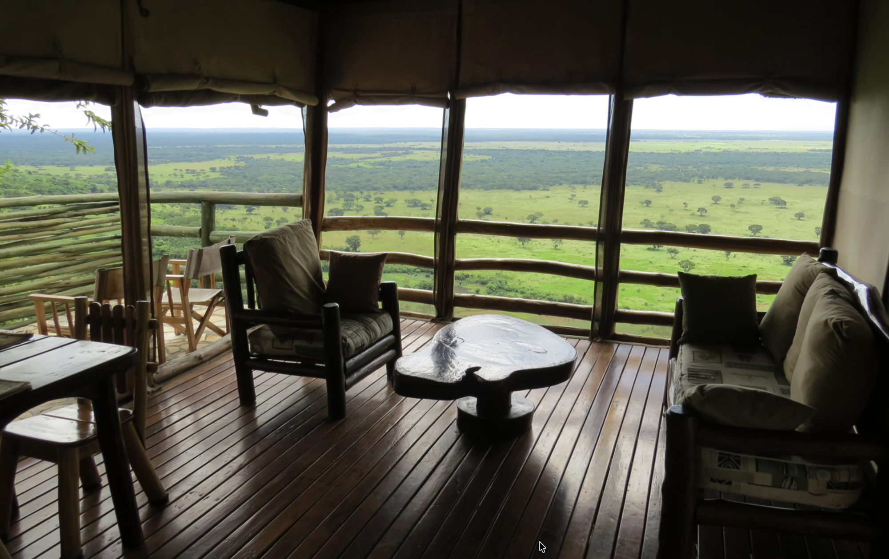
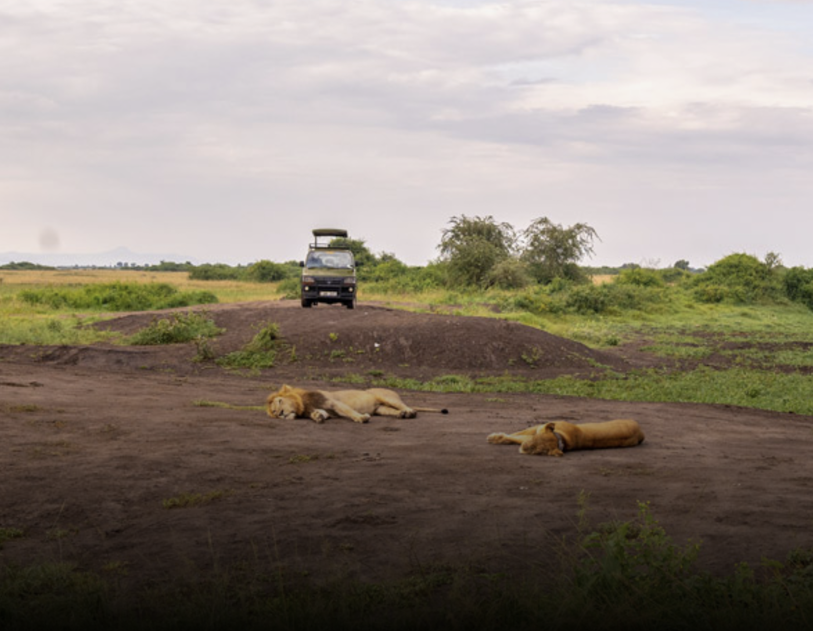
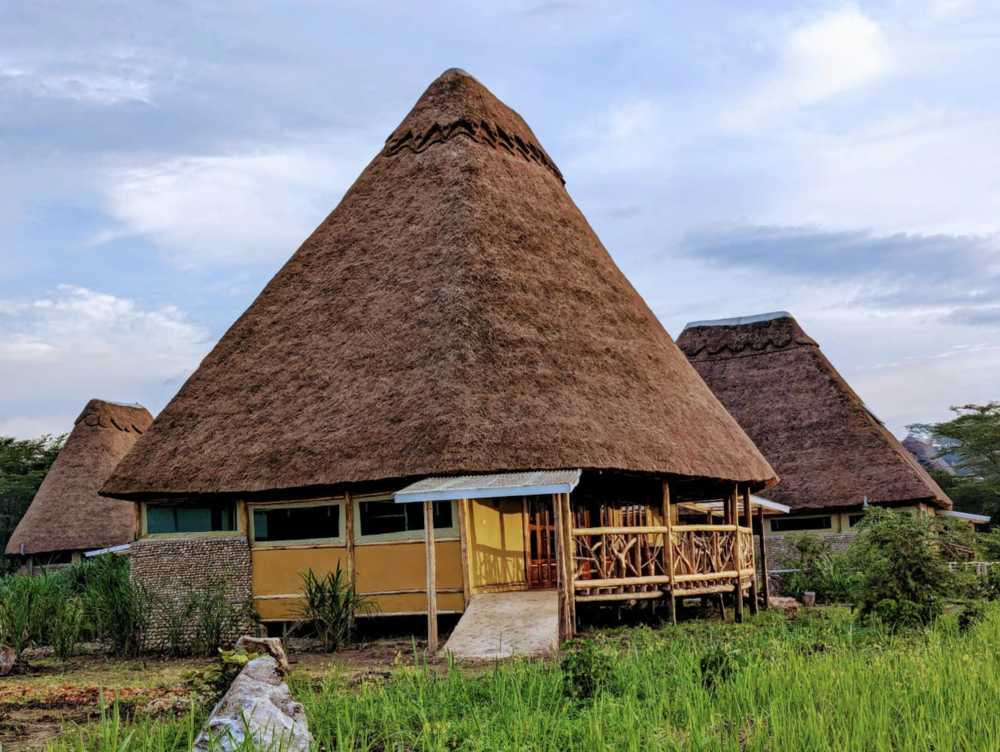
Dagboek
Vier volle safari-dagen. De boottocht, de olifanten en buffels op de vlaktes, het moment waarop jullie de leeuwen hoog in de vijgenboom spotten in Ishasha... Hoe was de hereniging met Roos en Yuri? Schrijf het hier op, het zijn de momenten die je voor altijd bijblijven.
Foto's
Agandi Lodge · Silverback Cottage · aan de rand van het oerwoud
● met Roos & YuriHet absolute zwaartepunt van de reis. Bwindi is meer dan 25.000 jaar oud, rijst op van 1.160 tot 2.607 meter en is bedekt met nevels die nooit helemaal optrekken. In dit oerwoud leven 459 berggorilla's — bijna de helft van alle exemplaren die nog op aarde rondlopen. Nergens anders kom je zo dicht bij ze.
Op 19 juli trekken Odette, Timothy en Yuri te voet het bos in, één van 25 gehabitueerde groepen tegemoet. Een uur lang, oog in oog. Rosalie en Zeline brengen de dag door bij Roos, vlak aan de bosrand van Agandi Lodge — met uitzicht op het oerwoud dat je tegelijk aantrekt en op afstand houdt.
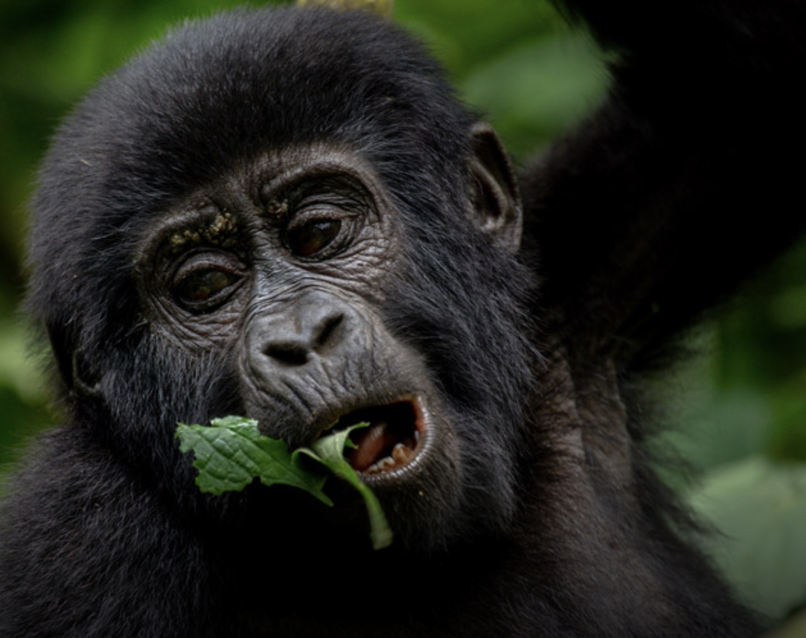
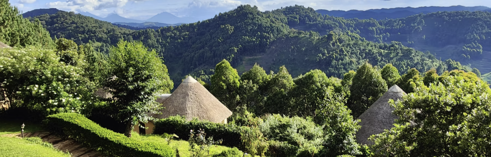
Dagboek
De gorilla-trekking. Schrijf dit op terwijl het nog vers is. Hoe was de rit naar de bosrand, hoe lang duurde het lopen, het moment dat je ze voor het eerst zag — die blik, die grootte, die rust. Hoe voelde het uur dat jullie bij de familie doorbrachten? Dit is het verhaal dat je wilt bewaren.
Foto's
Sharp Island Lodge · op een eiland in het meer
● Roos neemt afscheid op 23 julNa de intensiteit van de trekkings een welverdiende adempauze. Lake Bunyonyi is een van de mooiste meren van Uganda, bezaaid met kleine eilandjes die als groene bollen uit het water steken. Sharp Island Lodge ligt op een van die eilandjes — je komt er alleen per kano.
Vlak tegenover onze slaapplek ligt het eiland van Yuri. Een eigen stukje meer, midden in het water, omringd door ochtendmist en vogelgeluiden. Het plan van Roos en Yuri is om hier eco-lodges te bouwen — een droom die langzaam vorm begint te krijgen. Wij helpen een paar dagen mee en zien met eigen ogen wat zij samen voor ogen hebben — dit is hun avontuur.
Drie dagen zwemmen, kanoën, bouwen en niets moeten. Op 23 juli neemt Roos afscheid hier en rijden wij de laatste lus in.
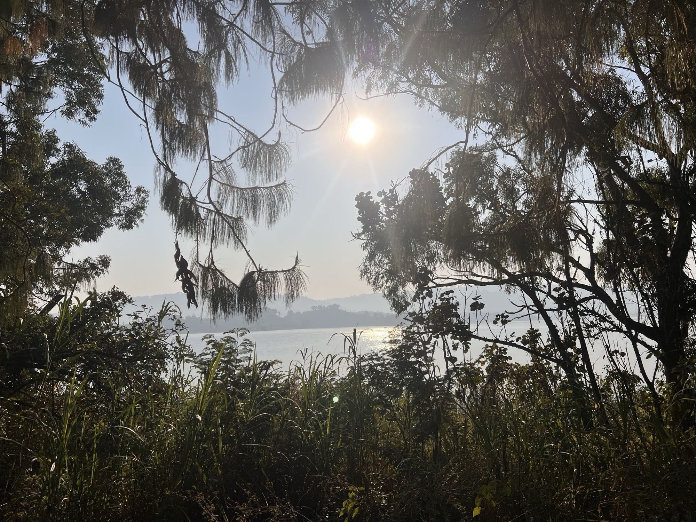
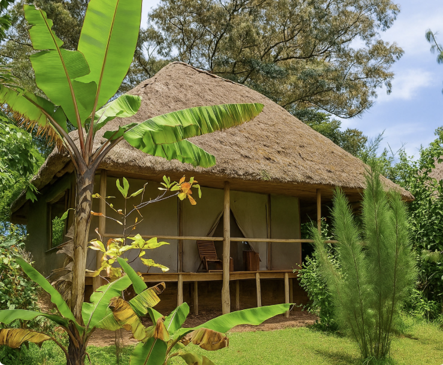
Dagboek
Het eilandleven, de rust na alle avonturen, de kinderen in het water... En het afscheid van Roos op de ochtend van de 23e. Hoe voelde het om de groep kleiner te zien worden? Wat hebben jullie de laatste avond samen gedaan?
Foto's
Hyena Hill Lodge
Het kleinste savannepark van de route, en juist daarom intiem. Lake Mburo heeft geen olifanten of grote roofdieren overdag — wel zebra's, impala's, kob en nijlpaarden in het meer. Omdat er geen grote predatoren rondtrekken is een wandelsafari hier mogelijk, een heel andere ervaring dan vanuit de auto.
En dan is er de nachtsafari. Als de zon onder is verandert het park: luipaarden en servals worden actief zodra de duisternis valt. Een van de weinige plekken in Oost-Afrika waar je een échte kans maakt op een luipaard in het wild.
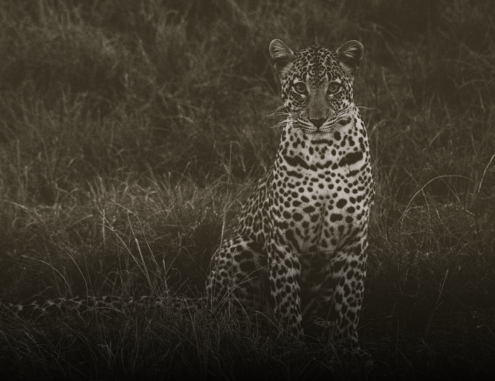
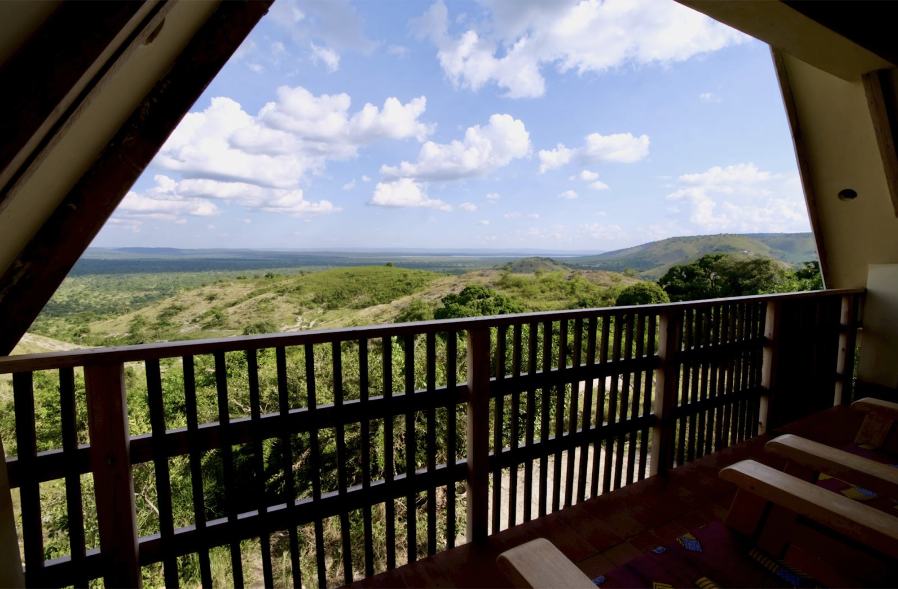
Dagboek
De zwaarste rijdag achter de rug, en dan dit rustpunt. De wandelsafari, de zebra's die je bijna aan kunt raken, de sfeer van de laatste parkdagen... En de nachtsafari: het park bij donker, met een spotlight, op zoek naar een luipaard. Hebben jullie hem gevonden?
Foto's
Hotel Horizon · aan het Victoriameer · vlak bij de luchthaven
De zachte landing aan het einde van 21 dagen. Entebbe ligt rustig aan de oever van het Victoriameer, weg van de drukte van Kampala. Maar eerst nog één missie: de schoenbek ooievaar. Een van de meest bijzondere vogels ter wereld — prehistorisch van uitstraling, met een bek als een schoen en een blik die dwars door je heen kijkt. De moerassen rond het Victoriameer zijn een van de weinige plekken waar je hem in het wild kunt vinden.
Daarna pas: koffers pakken, reflecteren, en dicht bij de luchthaven overnachten voor de terugreis via Nairobi.
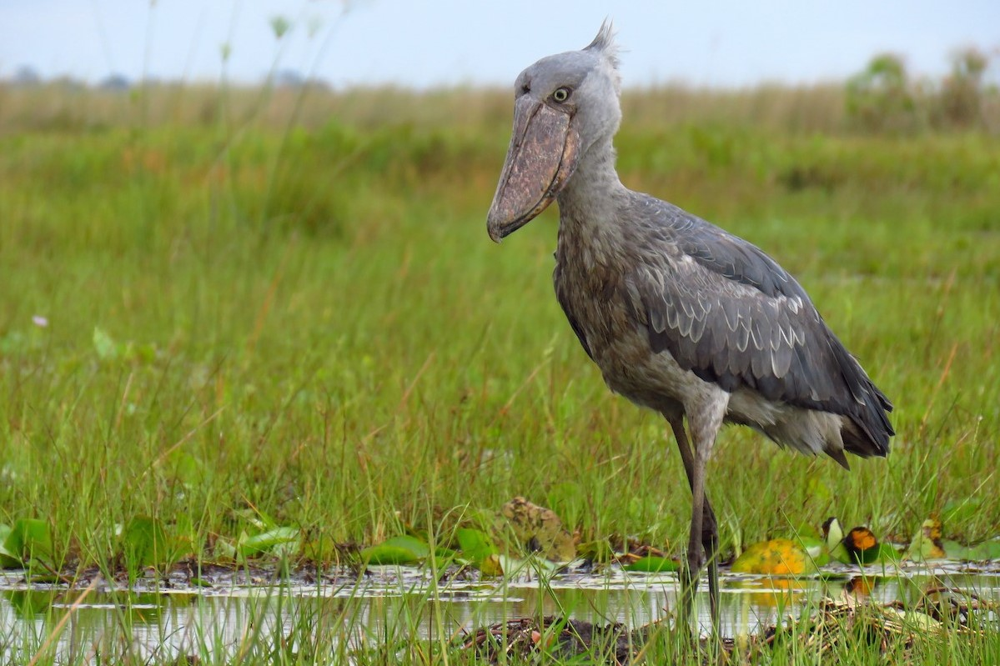
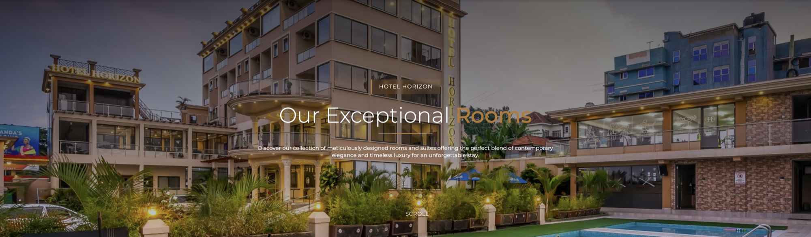
Dagboek
De laatste nacht in Uganda. Wat neem je mee? Wat heeft je het meest geraakt? De gorilla's, de chimpansees, de leeuwen in de boom, de kinderen in het meer van Bunyonyi, de avonden met Roos en Yuri... Schrijf het op. Voor de kinderen later, voor jezelf nu.
Foto's
De hoogtepunten
De hereniging met Roos en haar gezin in Kampala, en weken samen reizen door het land dat zij thuis noemen.
6 jul · Kampala · QENP · Bwindi · Bunyonyi
12 juli. Door het dichte regenwoud op zoek naar onze naaste verwanten, de Ngogo-gemeenschap hoog in de boomtoppen.
Timothy · Rosalie
16 juli. In het dramatische ravijn van Kyambura, dwars door Queen Elizabeth NP, voor de tweede ontmoeting met chimpansees.
Odette · Timothy · Roos
16–18 juli. De beroemde leeuwen van de Ishasha-sector die liggen te rusten in de hoge takken van vijgenbomen.
De hele groep
19 juli. Te voet het oerwoud in voor een uur bij een gorillafamilie — een van de meest bijzondere wildervaringen op aarde.
Odette · Timothy · Yuri
2–3 uur door het donkere park vanaf 19:00, op zoek naar luipaarden, bush babies en stekelvarken die in de nacht ontwaken.
Het hele gezin · 23 of 24 jul